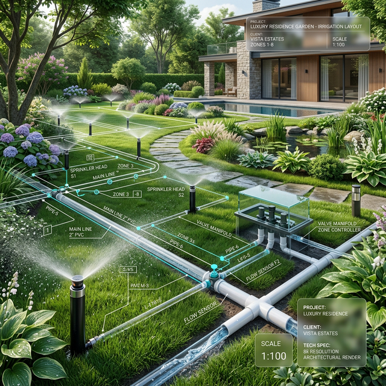

أصمم أنظمة ري موفّرة للمياه
للفيلات والمزارع في مصر | طالب بخبرة ميدانية حقيقية مع FAO. ندمج الذكاء الهندسي مع تقنيات الترشيد لنخلق أنظمة ري ذكية وكفاءة توفّر في استهلاك المياه والمصاريف.
{kind=link}

الأدوات التي نحترفها
رحلة المشروع من الفكرة للتنفيذ
الدراسة والمساحة
رفع مساحي دقيق للموقع ودراسة نوع التربة ومصادر المياه المتاحة.
التصميم الهيدروليكي
استخدام البرامج الهندسية لتصميم شبكة ري تضمن أعلى كفاءة توزيع.
التوريد والتركيب
اختيار أجود الخامات العالمية والإشراف الدقيق على مراحل التركيب.
التشغيل والدعم
اختبار النظام بالكامل وتدريب العميل على برمجة لوحات التحكم الذكية.
مشروع ميداني
توفير مياه
فدان مروي
بحث علمي
تقنيات تعيد تعريف الاستدامة
المراقبة اللحظية (IoT)
دمج مستشعرات رطوبة التربة الذكية مع أنظمة المراقبة المركزية لاتخاذ قرارات ري مبنية على البيانات اللحظية لدعم الاستدامة.
تحليل البيانات بالذكاء الاصطناعي
استخدام نماذج التنبؤ بالطقس لضبط جداول الري تلقائياً وتقليل الهدر بنسبة تصل إلى 40%.
التصميم الحضري
حلول سكنية تدمج الجمال الطبيعي بكفاءة الموارد.
طاقة متجددة
تشغيل أنظمة الري الذكية بالطاقة الشمسية النظيفة.
احسب مقدار التوفير المتوقع
استخدم هذه الأداة البسيطة لتقدير كمية المياه التي يمكن توفيرها عند التحويل من الري التقليدي (الغمر) إلى أنظمة الري الحديثة والذكية.
ملحوظة هندسية
هذه الحسابات تقديرية وتعتمد على متوسط كفاءة النظم العالمية (الري بالتنقيط تصل كفاءته إلى 95%).
توفير مياه يصل إلى:
0 م³ / سنة
جاهز للبدء في
مشروعك القادم؟
دعنا نناقش كيف يمكننا تحويل رؤيتك إلى واقع هندسي مستدام وبأعلى معايير الكفاءة العالمية.